欧游札记之火舞西班牙（Day13马德里——塞哥维亚）

Day13 马德里——塞哥维亚
挑了塞哥维亚作为马德里周边游的景点之一确实是我们无心之举，主要是贪图其近，仅半个小时的高铁车程。而实际的游玩体验则超过我们的预期，物超所值，不虚此行。首先其气候非常好，在酷暑难耐的西班牙夏季里，再难以找到象塞哥维亚一样气温仅为十几二十度的如此舒适宜人的景点了，更别说和安达卢西亚地区动不动就超过35度的高温环境相比较了。
塞哥维亚给我们的最深印象便是罗马水道桥，从高铁站出来搭乘公交没多久便到达了水道桥附近，极目远眺，上下双层的水道桥曲折向前，延绵不绝，下层拱形结构主要起到支撑和架高作用，形成足够落差以确保水往低处流，流进位于山顶的塞哥维亚老城，上层则是承载流水的水槽及其拱架。双层结构总共166个拱门，各司其职，将15公里外的阿塞贝塔河水连绵不绝地送入城内，令人难以的是这个修建于近两千年前的石头建筑未使用任何连接材料如水泥等，历经风雨、巍然不动，默默承担输水职责，直至今日还在间接发挥它的作用，而其保存完整程度甚至超过中国长城和埃及金字塔等几大世界建筑奇迹，即便放在今日也是一项现代建筑技术难以完成的巨型工程，不得不由衷佩服古罗马人的智慧和高超的建筑工艺。登上了水道桥进入老城的顶端，回首望去，笔直延伸向远方的桥身气势磅礴，青筋毕露，仿佛一条骨骼清奇、肌肉饱满的巨龙，逐渐隐没在远方褐红色房屋森林之中。
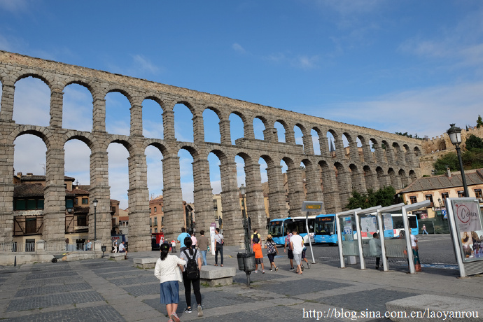
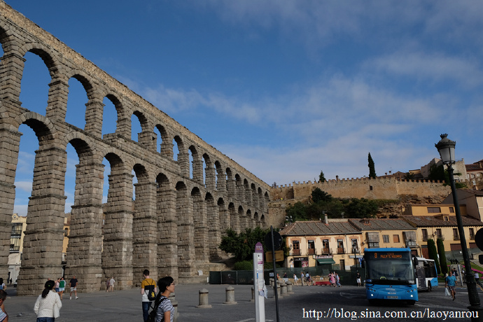
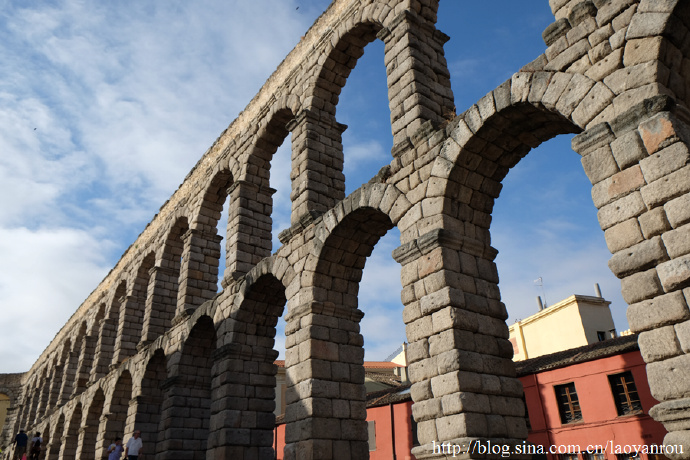
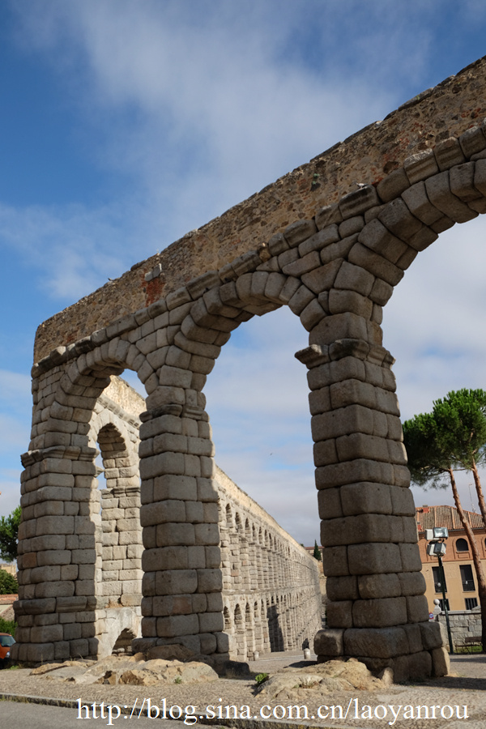
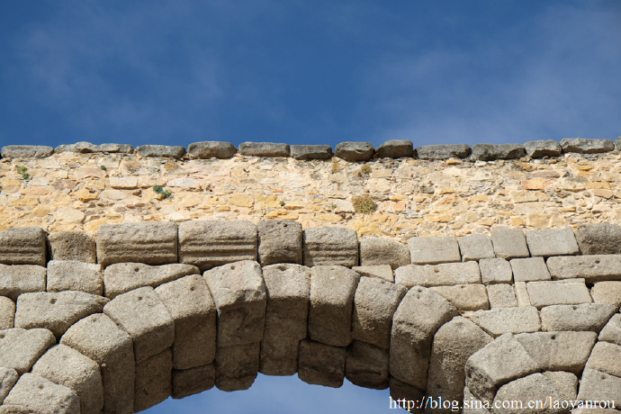
塞哥维亚老城占地不大，但是浓缩的都是精华，尤其是大教堂及其附近的马约尔广场是吐血推荐的绝好景点。尽管由于审美疲劳缘故没曾进入大教堂，但仅从外观来看非常年轻，是西班牙最新的哥特式大教堂，因为优雅华贵，颇有圣索菲亚大教堂的风范，也被称为“大教堂中的贵妇人”。
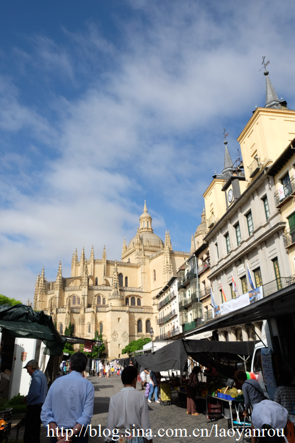
而教堂外的马约尔广场更是极具魅力，集农贸小商品市场和旧货市场于一身，特色腌制小黄瓜、辣椒、橄榄、大蒜等小吃和农家作坊式面包点心引得我们垂涎欲滴，忍不住排了十几分钟长队买了一些特色点心大快朵颐，吃完还欲罢不能连连后悔没买多一些，好客的塞哥维亚人看见我们是外国人不仅耐心地等我们左顾右盼还热情推荐我们买哪些好吃，真是出门在外如沐春风！虽然市场也卖一些服装等日常用品，但对我们来说一些卖二手旧货的摊档更有吸引力，有了上次在德国慕尼黑跳蚤市场成功淘宝的经历，令我们期待能够在民风淳朴的西班牙乡下遇到惊喜，几个二手摊档看下来，有卖铜锅、铜盆、铜勺、搪瓷碗碟等厨具的，也有卖二战钢盔、斧头、锁链、老式打字机、油画等收藏品和家居用品的，甚至还有一家卖各式各样的铸铁钥匙的，一看就是开教堂大门之类的老旧大锁用的。东西确实是老东西，做工材质经历了几十上百年的考验依旧老而弥新，只可惜LP嫌乡土气息太浓，虽质朴但笨重，难以携带便悻悻作罢，只能过个眼瘾而已。
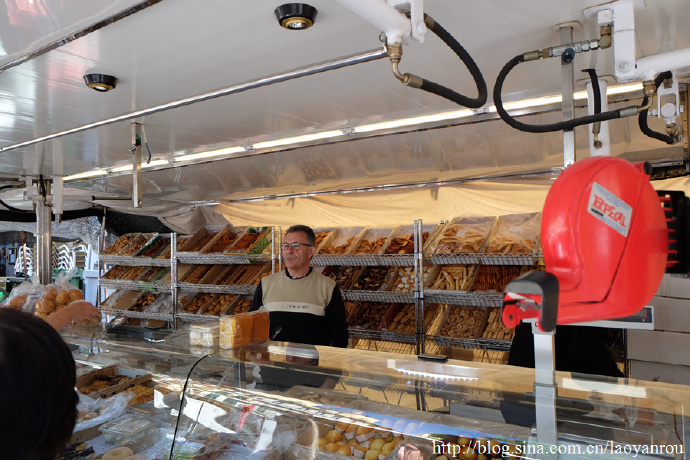
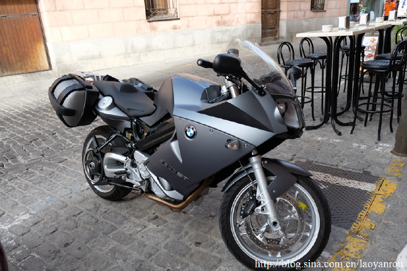
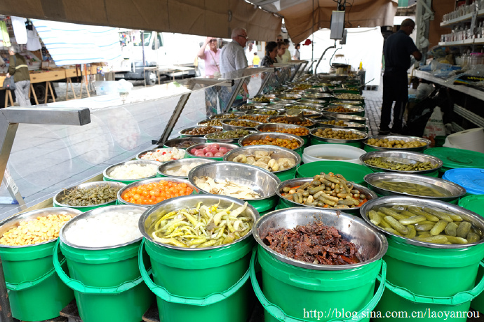
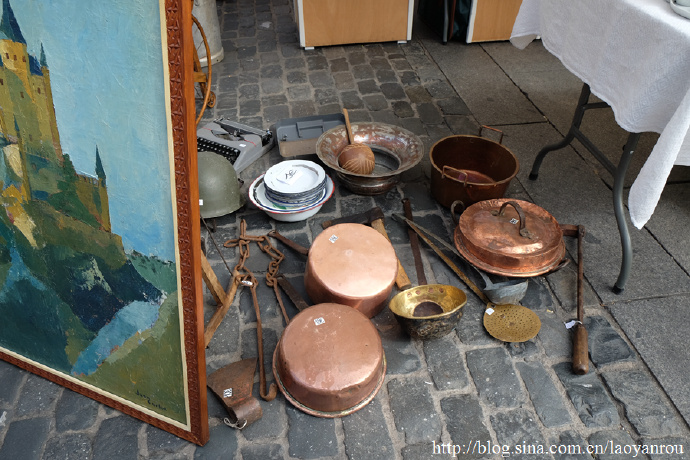
再往古城深处探秘，沿街的古建筑逐渐多了起来，圣米良教堂外的回廊的罗马柱头经典优雅，与中世纪风格的教堂无缝融合。某座教堂广场外围矮墙的狮虎兽身柱头也非常有特色，其雕刻工艺水准并不比教堂里的同类差。有不少老房子的门廊拱顶柱头年代久远极其类似古罗马时期的遗迹，还有一些建筑虽然年头不老，但墙面使用了非常复杂的穆德哈尔式银匠风格的蚀刻技术，装饰的雕花图案看上去非常养眼舒服，应该是近代某些摩尔艺术粉丝住家特意为之的作品。
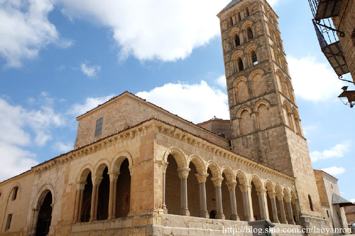
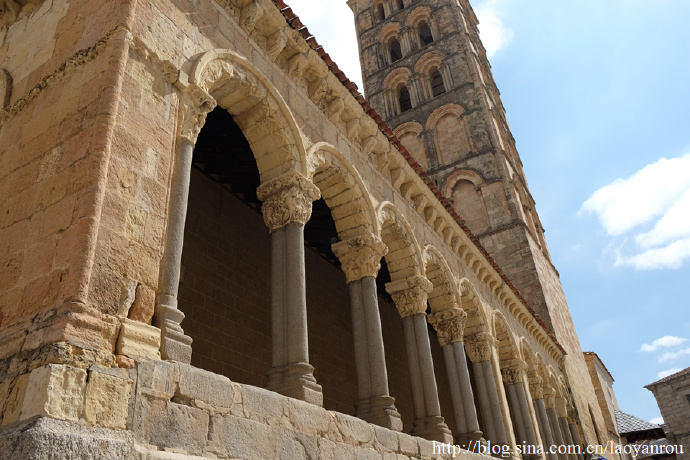
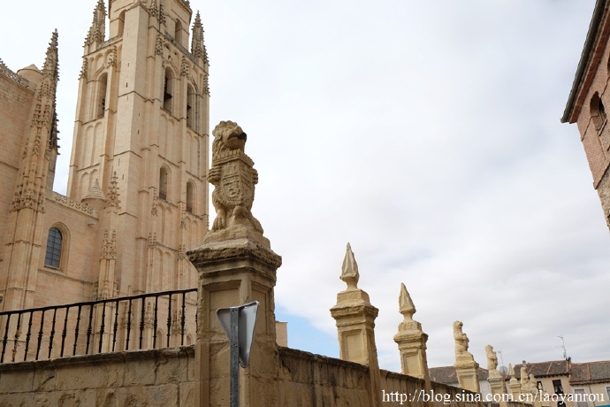
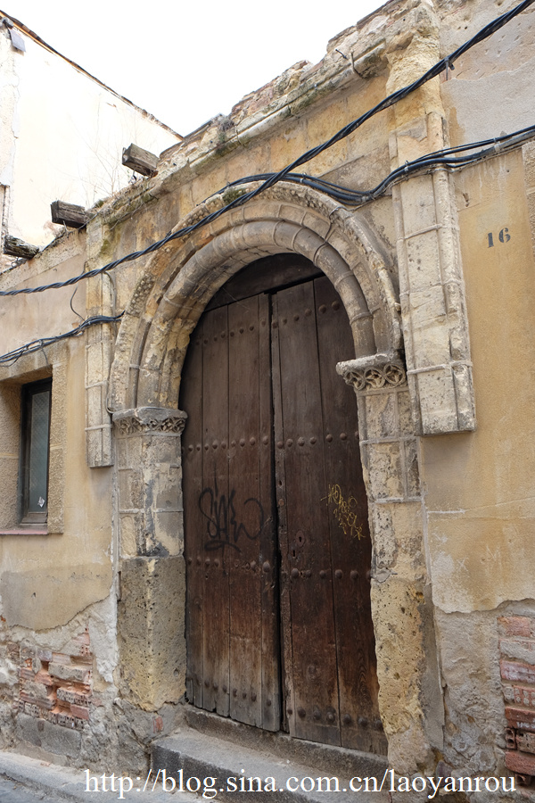
走到塞哥维亚古城的尽头就到了阿尔卡萨尔城堡，据说是迪士尼《白雪公主》城堡的原型，外观看上去异常崭新，仿若某个新开张迪士尼乐园的城堡景区，实际上该城堡最早于十三世纪初已经在该罗马要塞遗址上修建了，经历了五个世纪的历代国王增建改造后，大部分均毁于1862年的一场大火，现如今的城堡已经是重建的现代仿制品了。和动画片里的描绘如出一辙，铁灰色圆锥形圆塔楼尖顶，螺帽型的正方形主塔楼瞭望台，城堡外墙上布满了标志性的阿拉伯式的花纹雕饰，均毫无悬念地指向这部享誉中外的经典迪士尼动画片。
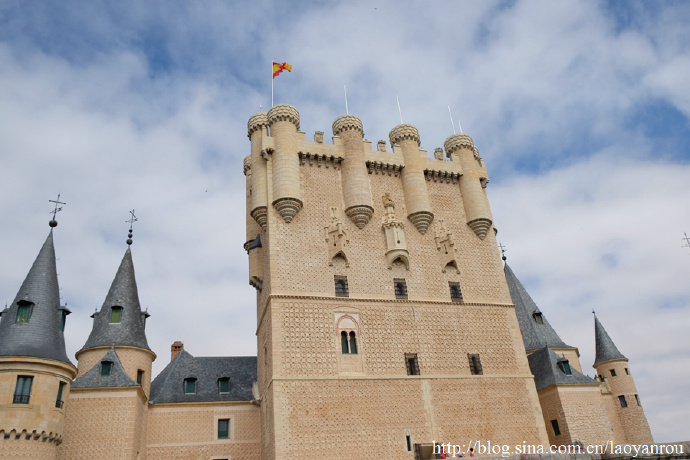
但我们实在无法接受参观现代仿制品便省了几十欧的门票钱，反倒不如坐在城堡前的广场边吹拂着西班牙北部山区的习习凉风、俯瞰远眺塞哥维亚初夏绿树黄草点缀于漫无边际郊野中的怡人风景。
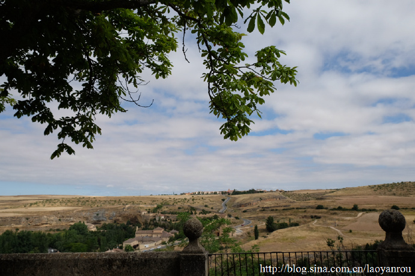
返回水道桥广场途中路过了一户瑞士风格大宅子，以现代人眼光来说并不算什么豪宅，掩映在四周参天的白杨树和松树橘树之中，但拥有一个修剪得整整齐齐的法式花园和一池碧蓝的游泳池，更难得的是居高临下独享俯瞰远处丘陵和原野的一线山景，可谓幽兰空谷、荡气回肠也！我们不禁窃想倘若能住在此地真乃不虚此生，想不身心愉悦都难。
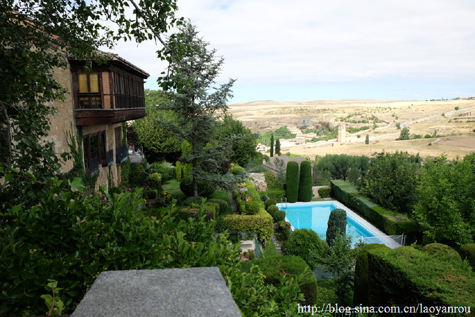
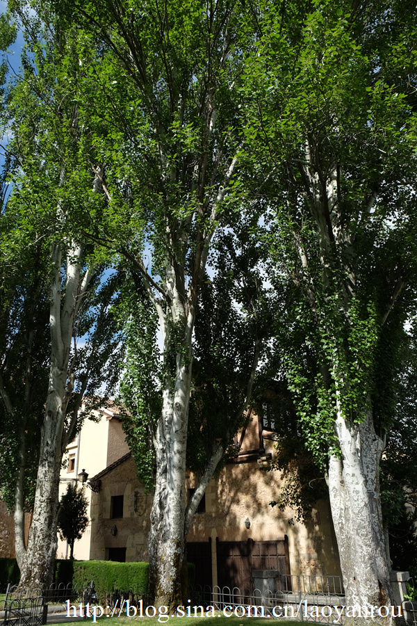
中午时分，冲着塞哥维亚名菜烤乳猪的名头，我们难得奢侈了一把，找了家猫头鹰推荐网红餐厅准备一饱口福。餐厅装修古色古香，典型的西班牙北部山区风格，墙上挂着一长溜凸显各个家族徽章的人物漫画，还有几只牛铃铛和经典的火遂手枪，说实话刚看见不足一月的小乳猪被端上来的时候心肝还是有点小颤动，LP一直在忏悔罪过罪过，而艾米则不以为然地立马操起刀叉动手开吃，和国内所谓的烤乳猪的做法不同，塞哥维亚乳猪是烤完后再炖的，所以味道不算太香口浓重，显得有点肥腻，倘若一个人吃肯定难以完成任务，我们三人吭哧吭哧总算干掉了一整只乳猪，其他菜就撑得吃不下去了，心想以后无论多好口碑的外国菜，咱们试一次就好，菜还是数我大中华的最合胃口。
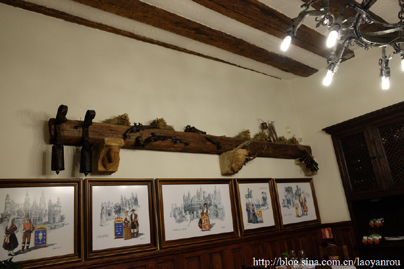
吃饱喝足，日头挂西，再一次回到罗马水道桥，逆光下的桥身筋骨毕露，别有一番风味。在高铁站候车时，迎着塞哥维亚丘陵上吹来的徐徐凉风，白云悠悠，野草低低，心中不舍愈发浮现。
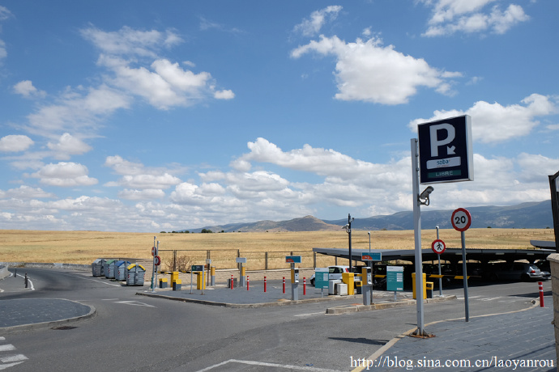